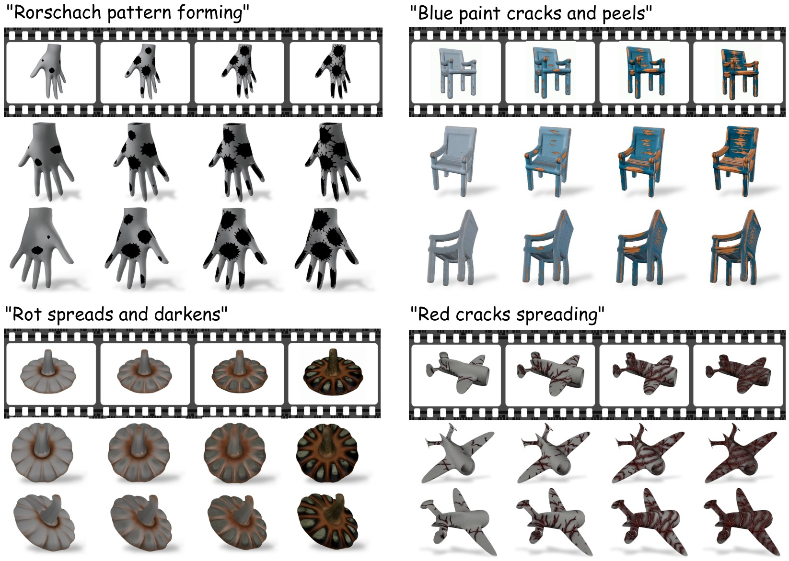
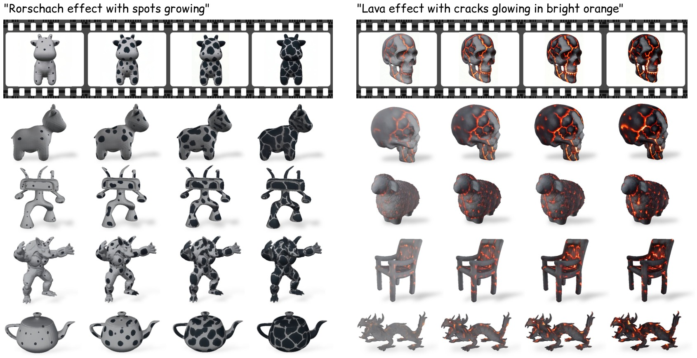
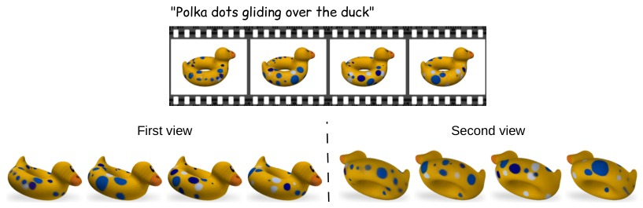
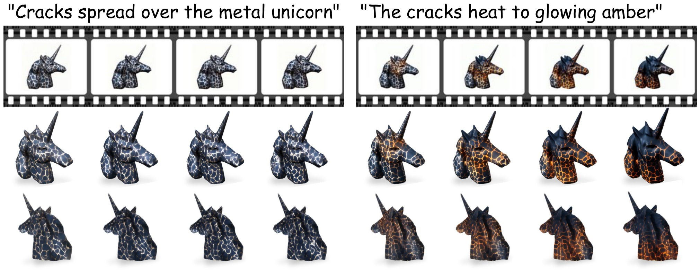
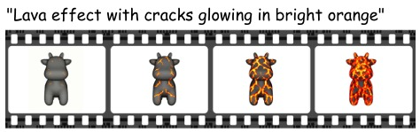

DynaMesh: Dynamic3DTexture Generation
University of Chicago
*Equal contribution
We present DynaMesh, a dynamic texture generation method for 3D meshes. Given a textureless shape and a text
prompt describing an effect, our method produces an appearance that evolves while the object's geometry remains
unchanged. Previous works on dynamic 3D content generation have focused on motion, where an object's geometry
and position change while keeping its appearance the same. Methods on texture generation sit on the other side
of the problem, painting appearance onto a shape as a fixed surface property and not as an evolving process.
Neither addresses a visual effect that propagates on a 3D object.
A natural route consists of two generators: a video model that shows the effect from a single view, and an
image-to-3D generator that lifts each frame to 3D. However, the latter has no notion of time, so running it per
video frame produces a sequence that flickers, loses effect details, and yields a different mesh at every video
frame. Our method addresses these failures by conditioning a video model on a render of the mesh and the prompt
to obtain a reference video, then running a frozen image-to-3D generator on the video with two changes. The
conditioning of each frame is blended over a temporal window, and low-rank adapters are fit per shape to restore
the lost details. The mesh is encoded once for the whole sequence, so geometry is constant by construction, and
the output is a single mesh with a texture per frame. Applied to various objects and effects, DynaMesh
substantially improves over recent video-to-4D and texturing methods, and can generalize its temporal effect to
different shapes never seen during training.

System overview. A render of the input mesh, together with a text prompt describing the effect, is passed to a video generation model, which returns the reference video for our pipeline. The 3D generator then produces the textured object at every frame. Our temporal cross-attention (the new module) conditions each frame's generation on a window of neighboring video frames. Low-rank adapters on the attention modules are fit per scene to recover detail. Geometry is shared across frames, so the output is one mesh whose texture evolves with the video.

Method overview. The token maps of an eleven-frame window are blended by a temporal attention layer. The blend conditions the generator's spatial cross-attention, which writes the frame's appearance onto the voxel tokens of the input mesh, and the 3D self-attention then propagates that appearance across the surface. Every weight except the rank-4 adapters on those two attentions is frozen.

Gallery of results. Four objects driven by four different effects. Each panel shows the driving video as a film strip and, below it, our output rendered from two novel viewpoints. The texture remains coherent even at viewpoints unseen in training.

Generalization across shapes. Per-scene adapters fit on a reference video are applied, without any retraining, to meshes never seen during fitting. Both effects clearly propagate on the new shapes according to the video. The adapters change only how appearance is generated, and each object keeps its own geometry, so the same spreading blots or lava cracks work even on different shapes.


Making an existing static texture dynamic. Our method can operate on objects with a given texture and
make it change over time, as shown for the moving spots over the duck. The dots glide around the ring while the
head stays clear, and the painted eyes, beak, and molded shading hold their place, so only the pattern moves.
Continuing an effect across clips. A second reference video, generated from the last frame of the first,
continues the same effect, so a progression that does not fit in one clip can be carried across several. The
cracks spread over the metal unicorn in the first clip and heat to glowing amber in the second.
🖱️ To interact with the 3D models, Scroll to zoom, hold the Left Click + drag to rotate, and hold the Right Click + drag to translate.

DynaMesh (ours)
Frozen TRELLIS.2
MeshNCA
We compare the methods that produce a true textured mesh on one reference video (top strip), with each method shown at four timesteps of the effect. Every cell is a real 3D asset that you can inspect from any angle, starting from the unseen view of the paper's comparison figure. The remaining baselines in the paper (SV4D 2.0, L4GM, DG4D) operate in video or Gaussian space and produce no mesh to interact with. DynaMesh tracks the effect consistently at every view and preserves the shape's geometry.
@InProceedings{hansini2027dynamesh,
author = {Hansini, Raj and Chen, Guan and Hanocka, Rana and Lang, Itai},
title = {{DynaMesh: Dynamic 3D Texture Generation}},
booktitle = {International Conference on 3D Vision (3DV)},
year = {2027}
}